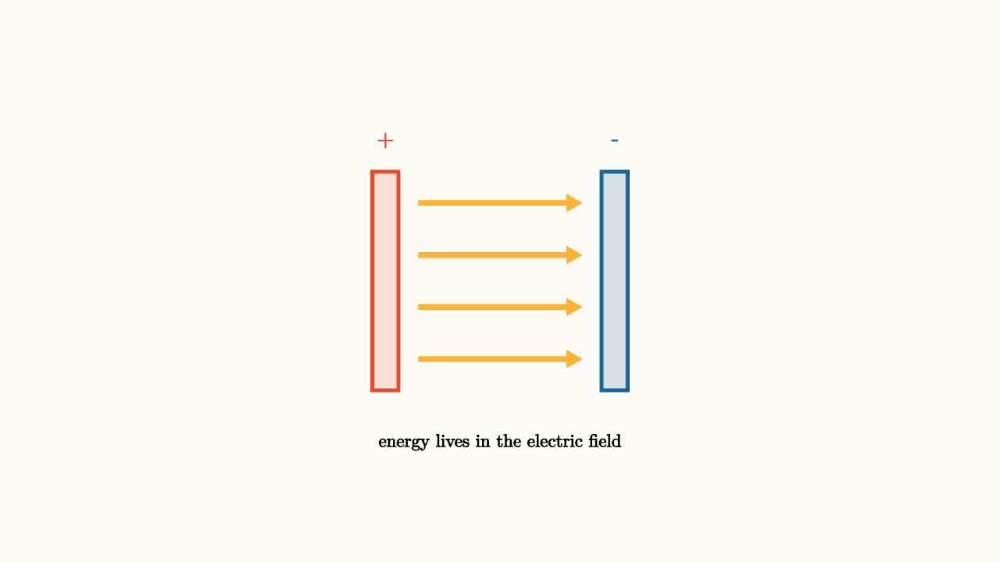

Capacitors Store Field Energy
A battery does more than push charge around a loop. It can separate charge and leave energy sitting in space. A capacitor is the simplest device built for that job: two conductors face each other, one holding excess positive charge and the other holding excess negative charge. The electric field between them stores energy.
For a capacitor, charge and voltage are linked by
The constant $C$ is capacitance. It measures how much charge separation a device can hold for each volt between its plates. A large capacitance means a small voltage can hold a lot of separated charge.
The parallel-plate formula shows what geometry is doing:
Large plate area $A$ gives the field more room. Small separation $d$ makes it easier to build a strong field at modest voltage. The material between the plates contributes through $\epsilon$, the permittivity.

source
background = [0.985, 0.98, 0.955, 1]
camera = Camera(4.8b)
mesh plates = block {
. fill{alpha{0.16} RED} stroke{RED, 3} center{[-1.1, 0, 0]} Rect([0.25, 2.1])
. fill{alpha{0.16} BLUE} stroke{BLUE, 3} center{[1.1, 0, 0]} Rect([0.25, 2.1])
. center{[-1.1, 1.35, 0]} color{RED} Text("+", 0.78)
. center{[1.1, 1.35, 0]} color{BLUE} Text("-", 0.78)
. color{ORANGE} Arrow(start: [-0.78, 0.75, 0], end: [0.78, 0.75, 0])
. color{ORANGE} Arrow(start: [-0.78, 0.25, 0], end: [0.78, 0.25, 0])
. color{ORANGE} Arrow(start: [-0.78, -0.25, 0], end: [0.78, -0.25, 0])
. color{ORANGE} Arrow(start: [-0.78, -0.75, 0], end: [0.78, -0.75, 0])
. center{[0, -1.55, 0]} Text("energy lives in the electric field", 0.62)
}
"separated charge"
play Fade(0.7)The field lines point from the positive plate toward the negative plate. In an ideal parallel-plate capacitor the field is nearly uniform between the plates and weak outside, at least away from the edges. This makes the capacitor a clean example of a field as a physical object, not only a tool for calculating force.
Why energy scales as voltage squared
Charging a capacitor is a gradual process. The first bit of charge is easy to move because the voltage is small. Later charge has to be pushed against the electric field already built by earlier charge. The work needed to add a small amount $dq$ is
Since $V=q/C$ during the charging process,
Using $Q=CV$, this becomes
That factor of one half tells the story of a rising voltage. The average voltage during charging is half the final voltage.
Energy can also be written as a property of the field itself. In a region with electric field magnitude $E$, the energy density is
This is one of the reasons field language matters. The capacitor does not store energy as a pile of charge on the plates. The separated charges create a field, and the field carries the energy.
Dielectrics join the field
Place an insulating material between the plates and the capacitance rises. The material becomes polarized: tiny positive and negative charges inside its molecules shift slightly in opposite directions. That internal rearrangement partly cancels the field inside the material, so the same free charge on the plates produces a smaller voltage. Since $C=Q/V$, lower voltage for the same charge means higher capacitance.
This is why real capacitors are material devices as much as geometric ones. Ceramic, electrolytic, film, and air capacitors all make different tradeoffs among capacitance, voltage rating, leakage, and response speed.
source
param gap = 1.15
background = [0.985, 0.98, 0.955, 1]
camera = Camera(4.8b)
let Cap = |gap| block {
. fill{alpha{0.16} RED} stroke{RED, 3} center{[-gap, 0, 0]} Rect([0.25, 2.0])
. fill{alpha{0.16} BLUE} stroke{BLUE, 3} center{[gap, 0, 0]} Rect([0.25, 2.0])
. fill{alpha{0.12} GREEN} stroke{GREEN, 2} center{[0, 0, 0]} Rect([2 * gap - 0.45, 1.65])
. center{[0, 1.35, 0]} Text("smaller gap means larger capacitance", 0.62)
. color{ORANGE} Arrow(start: [-gap + 0.28, 0.55, 0], end: [gap - 0.28, 0.55, 0])
. color{ORANGE} Arrow(start: [-gap + 0.28, 0, 0], end: [gap - 0.28, 0, 0])
. color{ORANGE} Arrow(start: [-gap + 0.28, -0.55, 0], end: [gap - 0.28, -0.55, 0])
. center{[0, -1.42, 0]} Tex("C = \\epsilon A / d", 0.72)
}
"geometry"
mesh scene = Cap(gap: $gap)
play Fade(0.6)
"move the plates"
gap = 0.82
scene = Cap(gap: $gap)
play Lerp(1.2)The parameter here is worth exposing because geometry is the concept. Moving the plates makes the formula visible. The scripted step draws attention to the inverse relationship with distance.
The lesson to keep
A capacitor stores energy by separating charge and building an electric field. The defining relationship $Q=CV$ is a compact summary of geometry, material, and voltage. The energy grows like $V^2$ because later charge is added against a stronger field.
In circuits, capacitors often appear as timing elements, smoothing elements, and energy buffers. The next question is natural: when a capacitor is connected through a resistor, how fast does the field fill or empty?